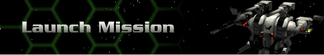

› |
› |
Launch Mission |

You must have at least one Herc purchased, one Bioderm created and linked to that Herc, and a mission selected before you will be able to set out to complete the mission. When you are ready, click on the Herc Carrier at the center of the Herc Base or choose Launch Mission from the menu.